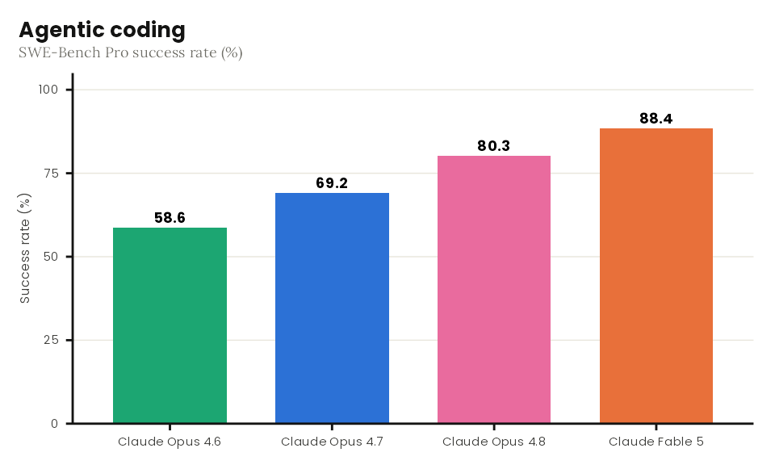
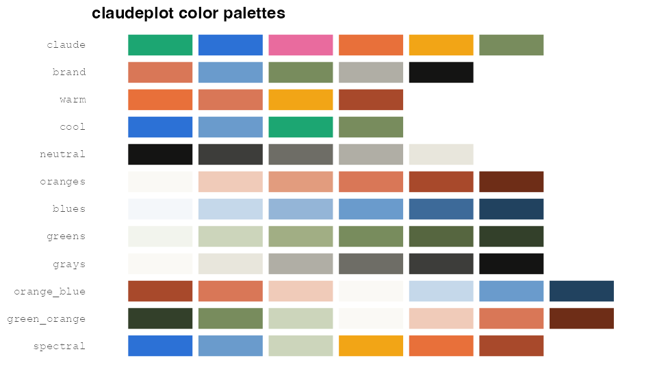

claudeplot brings the visual language of Anthropic and Claude to ggplot2. It gives you a clean, publication-ready theme, color palettes drawn from Anthropic’s brand and its data-visualization style, discrete and continuous color/fill scales, and palette display helpers. Anthropic’s recommended open typefaces — Poppins for headings and Lora for body text — are bundled and registered automatically.
Installation
Install the development version from GitHub:
# install.packages("pak")
pak::pak("viniciusoike/claudeplot")Or install from R-universe:
install.packages(
"claudeplot",
repos = c("https://viniciusoike.r-universe.dev", "https://cloud.r-project.org")
)For the bundled fonts to render, install the suggested packages and use a ragg graphics device:
install.packages(c("systemfonts", "ragg"))Usage
library(ggplot2)
library(claudeplot)
df <- data.frame(
model = c("Claude Opus 4.6", "Claude Opus 4.7", "Claude Opus 4.8", "Claude Fable 5"),
score = c(58.6, 69.2, 80.3, 88.4)
)
ggplot(df, aes(model, score, fill = model)) +
geom_col(width = 0.7) +
geom_text(aes(label = score), vjust = -0.5, fontface = "bold") +
scale_fill_claude_d() +
labs(
title = "Agentic coding",
subtitle = "SWE-Bench Pro success rate (%)",
x = NULL, y = "Success rate (%)"
) +
theme_claude() +
theme(legend.position = "none")
Color scales
Discrete (_d) and continuous (_c) scales are available for both color (and colour) and fill:
scale_color_claude_d(palette = "claude") # discrete, vivid benchmark palette
scale_fill_claude_d(palette = "brand") # discrete, muted brand accents
scale_fill_claude_c(palette = "oranges") # continuous, sequential
scale_color_claude_c(palette = "orange_blue") # continuous, divergingPalettes
Explore palettes with show_claude_palette() (one palette) and show_claude_palettes() (all of them):

The families are qualitative (claude, brand, warm, cool, neutral), sequential (oranges, blues, greens, grays), and diverging (orange_blue, green_orange, spectral). List them with claude_palette_names().
Fonts
claudeplot bundles Poppins and Lora (both SIL Open Font License). They are registered with systemfonts when the package loads. Check the status with:
If the fonts are unavailable, theme_claude() falls back to generic "sans" and "serif" families.
How this package was made
claudeplot is itself a small experiment. It was built on the release day of Claude Fable 5, as a test of what Claude (the model writing this) can do end to end: researching Anthropic’s brand and chart style, designing the palettes and theme, writing the package, getting it to pass R CMD check --as-cran with zero notes, and shipping the GitHub repo and pkgdown site.
It was produced largely from a single prompt, with the help of a few useful templates and reference packages. Treat it as a demonstration rather than a battle-tested library — though the goal was very much to make it real.
Acknowledgements
Colors and typography follow Anthropic’s published brand guidelines. This is an unofficial, community package and is not affiliated with or endorsed by Anthropic.